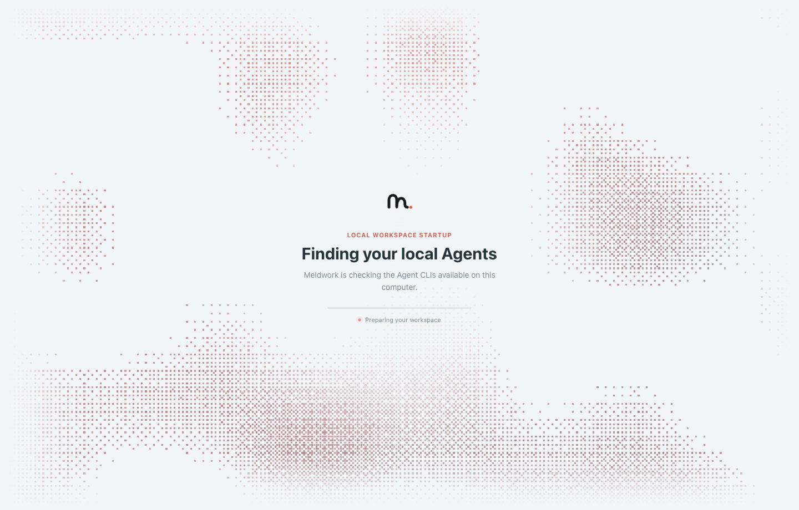

MiMo Code
MiMo Code OpenCodeReview
OpenCodeReviewMeldwork is a local-first work cell for AI coding agents — it orchestrates the agent CLIs you already run around one frozen task snapshot, records every finding as evidence, and puts a human adoption gate before any workspace change.

LOCAL-FIRST · MULTI-AGENT WORK CELL
Meldwork builds the organization layer for AI agents — a local work cell that keeps participants explicit, context scoped, run state inspectable, and human review in the loop.
DETECTED ON YOUR MACHINE
Meldwork detects an installed command when its adapter and the CLI version are compatible. Approved Agent Connectors can be added through the Agent Connector SDK.
THE SHORT ANSWER
Meldwork is a local-first work cell for AI coding agents — it orchestrates the agent CLIs you already run around one frozen task snapshot, records every finding as evidence, and puts a human adoption gate before any workspace change.
Codex, Claude Code, Gemini CLI, Qwen Code, Kimi Code, MiMo Code, OpenCode, OpenCodeReview, Hermes, Pi Agent, OpenClaw, WorkBuddy — detected natively on your machine.
Direct · Concurrent Responses · Auto Discussion V4
Attached to every result — dissent stays visible, never hidden behind a manager.
macOS · Apple silicon · Electron
100% local-first work cell
THE WORK CELL
Choose the local Agents and participants. Participants are always selected by you — never auto-assigned from a roster.
Bound the goal, working directory, context, and permissions. Every run starts from a frozen task snapshot.
Direct, Concurrent Responses, or Auto Discussion V4 — from a single focused session to negotiated multi-round work.
Inspect findings, evidence, and any Human Gate before the workspace changes. Nothing writes itself.
COLLABORATION MODES
Same Case, same evidence trail — different depth of agreement. Pick the mode that matches how much review the decision deserves.
One selected Agent keeps its conversation and native session when supported.
Best for focused work with one Agent.Selected Agents receive the same frozen task snapshot and return independent replies in stable order.
Best for comparing approaches before choosing one.Agents propose, challenge, negotiate responsibilities, execute dependency-aware work, then verify the result.
Best for multi-round work with explicit responsibility.WHAT YOU CONTROL
These four invariants are what make multi-agent output reviewable instead of just decorative.
Workspace writes are opt-in. Nothing changes until you adopt the result — agents don't.
Opt-in workflow controlsEvery run starts from a snapshot. All selected Agents see the same brief, in stable order.
Case-scoped, reproducibleFinding → Evidence → Decision → Disposition, attached to each result. Dissent stays visible.
No hidden managerElectron work cell on your machine. No remote Agent fleet. Conversations stay local.
Your CLI, your dataINSIDE A REAL RUN
A focused conversation, independent perspectives, or Agents building on each other's work.
INSIDE THE WORK CELL
Pick the participants before any work runs. Meldwork detects installed CLIs and shows their adapter status.
Findings, evidence, and adoption decisions live in one Case. Dissent stays visible — never hidden behind a manager.
Propose, negotiate, verify — across rounds. Every Agent's position is preserved for later review.
One Agent, its native session preserved. Focused work with the full evidence trail still attached.



Example: give Codex, Claude Code, and Gemini CLI the same change-review context, compare their independent findings, then adopt only the evidence-backed result you approve.
HOW MELDWORK DIFFERS
Meldwork connects the local Agent tools you already use to a decision-ready review workflow — and keeps independent findings, evidence, responsibility, and the human adoption decision visible in one local work cell.
Dissent stays visible. Disagreement, re-checks, and adoption records are tracked — never hidden behind a central manager.
Workspace writes are opt-in workflow controls. You adopt the result — the agents don't.
Runs in your Electron work cell with existing CLIs. No cloud Agent fleet, no required server, conversations stay local.
Case-scoped independent judgments with evidence-backed decisions — not terminal count or worktree throughput.
WHERE MELDWORK FITS
A condensed map of how Meldwork positions itself next to terminal runners, cloud fleets, communication networks, and framework-based orchestrators. Full per-project comparison lives in the README ↗.
ARCHITECTURE AND PERMISSIONS
The desktop app keeps conversations, run records, and user controls in local storage.
LocalA local process receives the scoped task and permissions through its adapter.
Local processPrompts, attachments, or Skills may be sent to external services under their own terms.
May be remoteMeldwork is a local-first desktop workspace for multi-Agent research and review. It connects user-selected Agent CLIs through direct conversations, concurrent responses, and multi-round discussion.
An Apple silicon Mac and at least one supported Agent CLI installed and authenticated. The preview includes 12 built-in Agent adapters. Detection and capabilities depend on the installed CLI and its compatible version; model access and usage charges remain with your chosen provider.
You choose the participants. Agents begin with independent proposals, then continue in sequence or route the next turn to selected peers in Agent-led mode. Native sessions continue when the adapter supports them. You can inspect each Agent's replies and run status.
No. Meldwork stores its conversations and run records locally and has no Meldwork-hosted conversation service. Selected Agents or connectors may send prompts, attachments, or Skills to their configured providers. Their data handling and network access follow their own configuration and terms.
Workspace writes are opt-in. Set the working directory and permissions before a run, and respond to any Human Gate that requires your input. These are workflow controls, not an operating-system sandbox; enforcement also depends on the selected CLI.
V1.0.4 is an Apple silicon macOS preview, ad-hoc signed and not notarized. Other platforms are not supported packaged targets in this preview. Meldwork uses Apache License 2.0, which permits commercial use under its terms. Agent CLIs, providers, and third-party assets may have separate terms.
Start with the Agents you already use. Choose a task, compare their perspectives, and decide your next step.
Ad-hoc signed and not notarized. On first launch, macOS may require Open Anyway in System Settings > Privacy & Security.